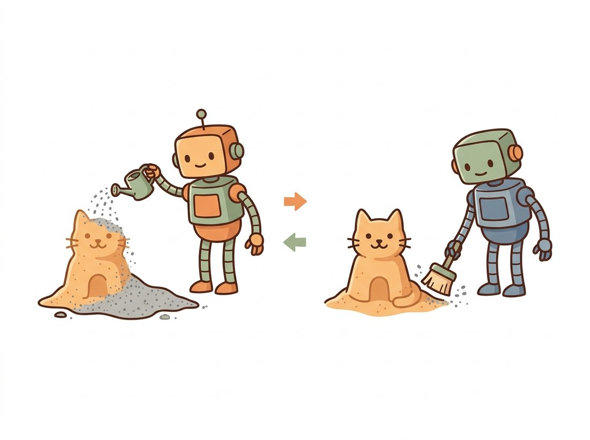
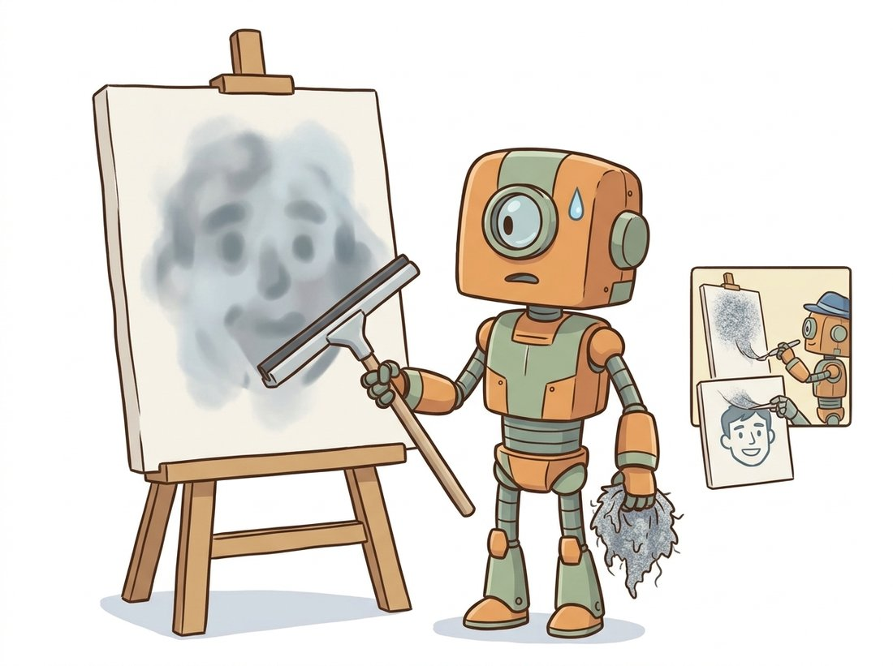
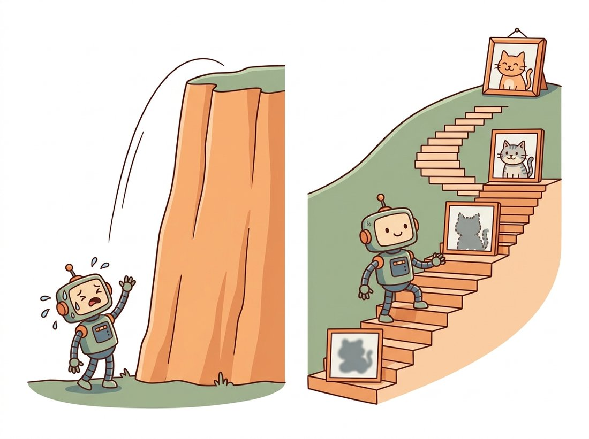

"Anyone can ruin a picture. The trick is ruining it so gently, and so predictably, that ruin becomes a road map back."
A Gaussian Noise Sample With a Plan
Diffusion turns generation into denoising by defining two processes: a fixed forward process that drowns a real image in Gaussian noise over many small steps, and a learned reverse process that removes one step of noise at a time, so that running it from pure static produces a fresh sample. The forward process has no parameters to learn; it is a known schedule of noise injection, and its single most useful property is that you can jump from a clean image to any noise level in one shot with a closed-form formula. That shortcut is what makes training feasible: instead of simulating hundreds of steps, you sample a random step, corrupt the image to that level instantly, and train a network to predict the noise you added. This section builds both processes from the ground up and trains a small denoiser end to end on a toy dataset.
In the previous chapters you built single-pass generators: the VAE decoder and the GAN generator each map a latent vector to an image in one forward call. Diffusion takes the opposite stance. It says that producing a good image in one step is hard, but removing a little noise from a slightly-noisy image is easy, and if you can do the easy thing reliably you can chain it into the hard thing. The plan for this section is to make that precise. We define the corruption, the forward process, with no learning at all. We derive the algebraic trick that lets us skip ahead to any noise level instantly. Then we set up the reverse process as a learned denoiser and train a working one on a two-dimensional toy distribution so you can watch noise turn into structure. The illustration below captures the whole idea: ruin a picture on purpose, then learn to undo the ruin.

1. The Forward Process: Gradual Destruction Beginner
Start with a clean data sample $x_0$, drawn from the data distribution we eventually want to model. The forward process defines a sequence of increasingly noisy versions $x_1, x_2, \dots, x_T$ by adding a small amount of Gaussian noise at each step. Concretely, each step takes the previous image, shrinks it slightly toward zero, and adds fresh noise:
Here $\beta_t \in (0, 1)$ is the variance schedule, a small number (often growing from about $10^{-4}$ to $0.02$ across $T = 1000$ steps) that controls how much noise enters at step $t$. The mean is scaled by $\sqrt{1 - \beta_t}$ so that the signal shrinks at exactly the rate needed to keep the total variance bounded as noise accumulates; without that scaling the values would blow up. After enough steps, the original signal has been almost entirely replaced by noise, and $x_T$ is essentially a sample from a standard Gaussian, carrying no information about $x_0$ at all. This destruction is the same Gaussian-noise corruption you studied as a degradation to be removed in Chapter 7; here we add it on purpose. Figure 33.1.1 shows the whole pipeline as a chain of corruptions running one way and learned denoising running back.
Because each step only depends on the one before it, the forward process is a Markov chain. The code below applies one forward step to a batch of images, and we use it to visualize the corruption progressing.
# Forward noising as a Markov chain: each step shrinks the signal by
# sqrt(1 - beta_t) and injects fresh Gaussian noise of variance beta_t.
# Iterating all T steps drives any image toward a standard Gaussian.
import torch
T = 1000
betas = torch.linspace(1e-4, 0.02, T) # linear variance schedule
def forward_step(x_prev, t):
"""One forward noising step q(x_t | x_{t-1})."""
beta_t = betas[t]
mean = (1.0 - beta_t).sqrt() * x_prev # shrink the signal slightly
noise = torch.randn_like(x_prev) # fresh Gaussian noise
return mean + beta_t.sqrt() * noise # reparameterized sample
x0 = torch.zeros(1, 1, 8, 8) # a toy "image": all zeros
x0[..., 2:6, 2:6] = 1.0 # a bright square in the middle
x = x0.clone()
for t in range(T):
x = forward_step(x, t)
print("variance of x_T:", x.var().item()) # ~1.0: the signal is goneforward_step for all $T=1000$ steps on an 8x8 toy image. By $x_T$ the bright square is gone and the printed variance has settled near one, the hallmark of a standard Gaussian. Note that forward_step contains no learnable parameters; the corruption is a fixed schedule.2. The Closed-Form Shortcut: Jump to Any Noise Level Intermediate
Running the chain one step at a time, as in the loop above, is fine for visualization but disastrous for training: to corrupt an image to step 700 you would simulate 700 steps. The decisive insight of the forward process is that you do not have to. Because each step is a linear Gaussian, the composition of many steps is also a single Gaussian, and you can write $x_t$ directly in terms of $x_0$. Define $\alpha_t = 1 - \beta_t$ and the cumulative product $\bar{\alpha}_t = \prod_{s=1}^{t} \alpha_s$. Then
Read the right-hand equation carefully, because it is the single most important formula in this chapter. To get a noisy image at any step $t$, you take the clean image, scale it by $\sqrt{\bar{\alpha}_t}$, and add scaled noise $\epsilon$, all in one operation. The factor $\bar{\alpha}_t$ runs from near one (almost no noise) at $t = 0$ down to near zero (almost all noise) at $t = T$, so it is a clean dial on the signal-to-noise ratio. The noise $\epsilon$ is the exact thing we will train the network to predict, which is why we have written it as a single drawn variable rather than a sum of per-step noises.
Without the closed form, computing a training target at step $t$ would cost $t$ sequential forward steps, and training on $T = 1000$ steps would be hopelessly slow. With it, every training iteration is: pick a random $t$, draw one $\epsilon$, build $x_t = \sqrt{\bar\alpha_t}\,x_0 + \sqrt{1-\bar\alpha_t}\,\epsilon$ in a single line, and ask the network "what was $\epsilon$?" The forward chain is never actually simulated during training. This is the difference between a clever idea and a usable one.
# Closed-form corruption: precompute the cumulative product alpha_bar_t
# so we can jump straight to any noise level t without simulating the chain.
# q_sample returns the noisy image x_t and the exact noise that produced it.
import torch
betas = torch.linspace(1e-4, 0.02, 1000)
alphas = 1.0 - betas
alpha_bars = torch.cumprod(alphas, dim=0) # cumulative product
def q_sample(x0, t, noise=None):
"""Jump directly to x_t with the closed form. t is a (B,) long tensor."""
if noise is None:
noise = torch.randn_like(x0)
ab = alpha_bars[t].view(-1, 1, 1, 1) # broadcast over image dims
return ab.sqrt() * x0 + (1.0 - ab).sqrt() * noise, noise
x0 = torch.rand(4, 1, 8, 8) # batch of 4 toy images
t = torch.tensor([10, 250, 600, 999]) # four different noise levels
xt, eps = q_sample(x0, t)
print(xt.shape, eps.shape) # torch.Size([4, 1, 8, 8]) twiceq_sample uses the precomputed alpha_bars cumulative product to corrupt a whole batch to four different noise levels (t = 10, 250, 600, 999) in one vectorized call, returning both the noisy images and the noise that produced them. This three-line function is the entire data pipeline for diffusion training.3. The Reverse Process: Learned Reconstruction Intermediate
The forward process is fixed; all the modeling effort goes into reversing it. We want $q(x_{t-1} \mid x_t)$, the distribution of the slightly-less-noisy image given the noisier one. This true reverse is intractable because it depends on the whole data distribution, but a remarkable fact rescues us: when the per-step noise $\beta_t$ is small, the true reverse step is itself approximately Gaussian. So we approximate it with a learned Gaussian whose mean is produced by a neural network $\theta$ and whose variance we usually fix to a known schedule:
What should the network actually output? Although it is the mean $\mu_\theta$ that the reverse step needs, it turns out to be far easier and more stable to train the network to predict the noise $\epsilon$ that was added in the forward step, then derive the mean from it algebraically. We will justify this noise-prediction choice fully in Section 33.2 when we work through the parameterizations; for now, accept it as the empirical winner. The network $\epsilon_\theta(x_t, t)$ takes the noisy image and the step index and outputs an estimate of the noise. The reverse step then computes the mean as
Intuitively, this subtracts the predicted noise from the current image (rescaled appropriately) and adds a touch of fresh noise via $\sigma_t$ to keep the chain stochastic. The training objective is then almost embarrassingly simple: corrupt an image with known noise, ask the network to predict that noise, and minimize the squared error. Because diffusion runs the same network at every step, the denoiser is a single, time-conditioned model rather than a generator and a critic; there is no adversary and no balance to maintain, which is exactly why diffusion training is so much more stable than the GAN training of Chapter 32.
It is natural to picture the denoiser at step $t$ removing the small slice of noise added between $x_{t-1}$ and $x_t$, as if it peeled off one thin layer. In fact $\epsilon_\theta(x_t, t)$ predicts the entire noise $\epsilon$ from the closed form $x_t = \sqrt{\bar\alpha_t}\,x_0 + \sqrt{1-\bar\alpha_t}\,\epsilon$, that is, all the corruption separating $x_t$ from the clean image $x_0$, not the single-step increment $\beta_t$. The reverse step then subtracts only a calibrated fraction of that full estimate (note the $\beta_t / \sqrt{1-\bar\alpha_t}$ scaling in the mean formula) and re-adds fresh noise, so the chain advances by one step even though the prediction targets the whole way back. Getting this wrong leads to scaling errors when people implement the reverse step by hand: they subtract the full predicted noise at once and produce a blurry average image instead of a sample. The illustration below dramatizes exactly that blunder.

The reason the reverse step can be Gaussian at all is a theorem from nonequilibrium thermodynamics: if a forward diffusion takes small enough steps, the reverse diffusion has the same functional form. The 2015 paper that introduced these models was literally titled "Deep Unsupervised Learning using Nonequilibrium Thermodynamics," and it sat largely ignored for five years until the 2020 DDPM paper showed the idea could beat GANs. Sometimes the field needs a while to notice a good thing.
4. Training a Denoiser From Scratch Intermediate
Let us assemble the pieces into a working training loop. We will use a tiny two-dimensional dataset, points arranged in two crescent moons, so that the "image" is just a 2-vector and the denoiser is a small multilayer perceptron (MLP). This strips away the U-Net machinery and lets you see the diffusion logic in fifty lines. The network takes the noisy point and the timestep (embedded as a couple of sinusoidal features) and predicts the noise. The training step uses exactly the closed-form sampler from subsection 2.
# End-to-end diffusion training on 2D crescent-moons data.
# A time-conditioned MLP predicts the injected noise; the loss is the
# squared error between predicted and true epsilon at a random timestep.
import torch
import torch.nn as nn
T = 200
betas = torch.linspace(1e-4, 0.02, T)
alphas = 1.0 - betas
alpha_bars = torch.cumprod(alphas, dim=0)
def time_embed(t, dim=16):
"""Sinusoidal timestep embedding, like positional encoding for time."""
half = dim // 2
freqs = torch.exp(-torch.arange(half) * (8.0 / half))
args = t[:, None].float() * freqs[None, :]
return torch.cat([args.sin(), args.cos()], dim=-1) # (B, dim)
class Denoiser(nn.Module):
def __init__(self, data_dim=2, hidden=128, tdim=16):
super().__init__()
self.net = nn.Sequential(
nn.Linear(data_dim + tdim, hidden), nn.SiLU(),
nn.Linear(hidden, hidden), nn.SiLU(),
nn.Linear(hidden, data_dim)) # predicts epsilon
def forward(self, x, t):
h = torch.cat([x, time_embed(t)], dim=-1)
return self.net(h)
model = Denoiser()
opt = torch.optim.Adam(model.parameters(), lr=1e-3)
def make_moons(n): # toy 2D data, no sklearn needed
theta = torch.rand(n) * 3.14159
top = torch.stack([theta.cos(), theta.sin()], 1)
bot = torch.stack([1 - theta.cos(), 0.5 - theta.sin()], 1)
pts = torch.where((torch.rand(n, 1) < 0.5), top, bot)
return (pts + 0.03 * torch.randn(n, 2)) * 1.5
for step in range(3000):
x0 = make_moons(256)
t = torch.randint(0, T, (256,)) # random step per sample
ab = alpha_bars[t].unsqueeze(1)
noise = torch.randn_like(x0)
xt = ab.sqrt() * x0 + (1 - ab).sqrt() * noise # closed-form corruption
pred = model(xt, t)
loss = ((pred - noise) ** 2).mean() # predict the noise
opt.zero_grad(); loss.backward(); opt.step()
if step % 1000 == 0:
print(f"step {step:4d} loss {loss.item():.4f}")xt with the closed-form corruption, and trains the time-conditioned Denoiser MLP to predict the injected noise. The printed loss falls from roughly 1.0 to about 0.3 as the denoiser learns.Once trained, sampling runs the reverse chain: start from a pure-noise point and repeatedly apply the reverse step using the mean formula from subsection 3. The loop below generates new samples that fall on the two moons, the distribution it never saw directly but only through corrupted views.
# Ancestral sampling: start from pure noise and walk the reverse chain.
# At each step we subtract the predicted noise (rescaled) to get the mean,
# then add a little fresh noise except at the final step t=0.
@torch.no_grad()
def sample(model, n=512):
x = torch.randn(n, 2) # start from pure noise
for t in reversed(range(T)):
tt = torch.full((n,), t, dtype=torch.long)
eps = model(x, tt) # predicted noise
a, ab, b = alphas[t], alpha_bars[t], betas[t]
mean = (x - b / (1 - ab).sqrt() * eps) / a.sqrt()
x = mean + (b.sqrt() * torch.randn_like(x) if t > 0 else 0.0)
return x
samples = sample(model)
print("generated mean:", samples.mean(0)) # near the data's centersample function. Starting from Gaussian noise, the loop applies the mean formula at every step down to $t=0$, adding fresh noise except at the final step; the generated mean sits near the data center. Plot samples with matplotlib to see the two arcs emerge from static.The from-scratch schedule and reverse step above are roughly forty lines of careful bookkeeping over $\alpha_t$, $\bar\alpha_t$, and $\beta_t$. The Hugging Face diffusers library packages all of it into a scheduler object: DDPMScheduler(num_train_timesteps=1000) exposes add_noise(x0, noise, t) (the closed-form corruption of subsection 2) and step(model_output, t, x_t) (the reverse step of subsection 3) as two method calls. Switching your training loop to it is a three-line change, and it handles the linear and cosine schedules, the variance choices, and the numerical edge cases at $t=0$ that are easy to get wrong by hand. The library internally maintains the precomputed $\sqrt{\bar\alpha_t}$ and $\sqrt{1-\bar\alpha_t}$ buffers so you never index a schedule incorrectly. Build it once from scratch to understand it; use the scheduler in production.
5. Why Many Small Steps Beat One Big Step Advanced
A natural objection is: if the network can predict the noise, why not predict all of it at once and jump straight from $x_T$ to $x_0$? The answer is that the noise-prediction task is only easy locally. At high noise levels the network can recover the coarse layout of an image (is it a face or a landscape) but cannot resolve fine detail, because the detail has been destroyed. At low noise levels the coarse structure is already present and the network only needs to sharpen edges and textures. By taking many steps, the model solves a sequence of easy problems, coarse structure first, then progressively finer detail, rather than one impossibly hard one. The slogan to remember is many easy steps, not one hard leap: diffusion trades a single impossible prediction for a long chain of trivial ones. This coarse-to-fine emergence is the same multi-scale logic as the image pyramids of Chapter 4, now unrolled over time instead of resolution. You can watch this happen on real images in the Hands-On Lab at the end of this section, where the toy denoiser of subsection 4 grows into a full image-generating diffusion model and ties together the forward process, the noise-prediction loss, and fast sampling that the rest of the chapter develops. The illustration below contrasts the impossible one-step leap with the easy staircase of many small steps.

Who: a three-engineer machine-vision group at a circuit-board manufacturer, late 2023. Situation: they needed synthetic images of rare solder defects to augment a tiny real dataset for a downstream defect detector. Problem: their first attempt used a GAN, but with only a few hundred real defect crops the GAN collapsed, producing the same three plausible-looking defects over and over, exactly the mode collapse warned about in Chapter 32. The detector trained on those images learned nothing new. Decision: they switched to a small DDPM, accepting the slower sampling because they only needed to generate offline. The noise-prediction objective has no adversary to collapse, so even on a few hundred images the model covered the full variety of the defect distribution. Result: the diffusion-augmented detector's recall on held-out rare defects rose by a wide margin over the GAN-augmented one, and the team never saw mode collapse again. Lesson: when training stability and distribution coverage matter more than sampling speed, the stable single-objective training of diffusion is often the safer bet, and offline generation hides the speed cost entirely.
The "many small steps" argument explains why early diffusion models used hundreds to a thousand sampling steps, which is slow. The entire arc of Section 33.4 and Section 33.5 is about beating that. DDIM (Song et al., 2021) cut steps to roughly 20 to 50 by making the reverse deterministic; consistency models (Song et al., 2023, arXiv:2303.01469) pushed toward a single step by training the network to jump directly to the endpoint of a trajectory. By 2024, distillation methods such as Latent Consistency Models and the adversarial-distillation SDXL-Turbo and SD3-Turbo families produced near-real-time generation in one to four steps, and the rectified-flow training in Stable Diffusion 3 (Esser et al., 2024, arXiv:2403.03206) straightened the path so that fewer steps lose less quality. The frame to keep is that the many-steps formulation here is the pedagogically clean starting point; production systems aggressively compress it.
Objective. Promote the two-dimensional toy denoiser of subsection 4 into a real generative model: train a small noise-predicting U-Net on FashionMNIST with the closed-form forward process and the simple noise-prediction loss, then sample a grid of brand-new clothing images from pure static. The finished artifact is a single PNG of generated samples plus a denoising filmstrip that shows static resolving into garments, the coarse-to-fine emergence of subsection 5 made visible on real images.
What You'll Practice
- Implementing the closed-form forward corruption $x_t = \sqrt{\bar\alpha_t}\,x_0 + \sqrt{1-\bar\alpha_t}\,\epsilon$ as a batched
q_sample(subsection 2). - Writing the noise-prediction training loop with a uniformly sampled timestep and mean-squared error on the predicted noise (subsection 4, formalized in Section 33.2).
- Building a compact time-conditioned U-Net denoiser with a sinusoidal timestep embedding.
- Running ancestral DDPM sampling from noise back to an image, and a faster deterministic skip-step sampler that previews the DDIM idea of Section 33.4.
- Reaching the same result with the Hugging Face
diffusersscheduler, the "Right Tool" payoff promised in the library-shortcut callout above.
Setup
Runs in Colab or any machine with PyTorch. A GPU trains in a few minutes; CPU works but is slow, so cut the epoch count if you have no GPU. FashionMNIST downloads automatically (about 30 MB).
pip install torch torchvision matplotlib diffusersSteps
Step 1: Build the noise schedule and the forward process
Precompute the linear $\beta_t$ schedule and the cumulative $\bar\alpha_t$ buffers once, then write q_sample, the closed-form jump that corrupts a clean batch to any timestep in a single call. This is the parameter-free half of diffusion.
import torch, torch.nn as nn, torch.nn.functional as F
device = "cuda" if torch.cuda.is_available() else "cpu"
T = 300 # fewer steps than 1000 keeps the lab fast
betas = torch.linspace(1e-4, 0.02, T, device=device)
alphas = 1.0 - betas
abar = torch.cumprod(alphas, dim=0) # cumulative product = alpha-bar_t
def q_sample(x0, t, noise):
# TODO: return sqrt(abar[t]) * x0 + sqrt(1 - abar[t]) * noise,
# broadcasting the per-sample scalars over the image dimensions.
# Hint: index abar with t (shape [B]) then reshape to [B, 1, 1, 1].
...
Hint
a = abar[t].view(-1, 1, 1, 1) gives one scalar per image; then return a.sqrt() * x0 + (1 - a).sqrt() * noise. Keep t as a long tensor of shape [B] so the indexing is per-sample.
Step 2: Define a small time-conditioned U-Net denoiser
The denoiser must know which noise level it is undoing, so feed the timestep through a sinusoidal embedding (the same positional-encoding trick as the transformers of Chapter 22) and add it into the convolutional features. A two-level U-Net is plenty for 28x28 images.
def timestep_embedding(t, dim=64):
half = dim // 2
freqs = torch.exp(-torch.arange(half, device=t.device) * (10000 ** (1 / half)).log())
args = t[:, None].float() * freqs[None]
return torch.cat([args.sin(), args.cos()], dim=-1) # shape [B, dim]
class TinyUNet(nn.Module):
def __init__(self, ch=64):
super().__init__()
self.temb = nn.Sequential(nn.Linear(64, ch), nn.SiLU(), nn.Linear(ch, ch))
self.down = nn.Conv2d(1, ch, 3, padding=1)
self.mid = nn.Conv2d(ch, ch, 3, padding=1)
self.up = nn.Conv2d(ch, 1, 3, padding=1)
def forward(self, x, t):
h = F.silu(self.down(x))
# TODO: add the timestep embedding into h (broadcast over H and W),
# pass through self.mid + SiLU, then return self.up(h).
...
Hint
Project the embedding with e = self.temb(timestep_embedding(t))[:, :, None, None] so it broadcasts over the spatial dimensions, then h = F.silu(self.mid(h + e)); return self.up(h). The network output has the same shape as the input: it predicts the noise, not the image.
Step 3: Train with the noise-prediction loss
Each step: draw a clean batch, sample a random timestep per image, corrupt it with q_sample, and train the network to predict the exact noise you added. The loss is a plain mean-squared error, the "simple" objective subsection 4 used and Section 33.2 derives from the variational bound.
import torchvision, torchvision.transforms as TT
tf = TT.Compose([TT.ToTensor(), TT.Normalize((0.5,), (0.5,))]) # scale to [-1, 1]
ds = torchvision.datasets.FashionMNIST("./data", train=True, download=True, transform=tf)
loader = torch.utils.data.DataLoader(ds, batch_size=128, shuffle=True, num_workers=2)
model = TinyUNet().to(device)
opt = torch.optim.Adam(model.parameters(), lr=2e-4)
for epoch in range(8):
for x0, _ in loader:
x0 = x0.to(device)
t = torch.randint(0, T, (x0.size(0),), device=device)
noise = torch.randn_like(x0)
xt = q_sample(x0, t, noise)
# TODO: predict the noise from (xt, t) and compute the MSE against `noise`.
loss = ...
opt.zero_grad(); loss.backward(); opt.step()
print(f"epoch {epoch} loss {loss.item():.4f}")
Hint
pred = model(xt, t); loss = F.mse_loss(pred, noise). The target is the noise tensor, never the clean image. Loss should fall from roughly 1.0 toward 0.04 to 0.06 over the eight epochs.
Step 4: Sample new images with ancestral DDPM
Run the reverse process: start from pure Gaussian noise and apply the reverse-step mean formula of subsection 3 at every timestep, adding fresh noise except at the final step. This is the slow but faithful sampler.
@torch.no_grad()
def ddpm_sample(model, n=64):
x = torch.randn(n, 1, 28, 28, device=device)
for i in reversed(range(T)):
t = torch.full((n,), i, device=device, dtype=torch.long)
eps = model(x, t)
a, ab, b = alphas[i], abar[i], betas[i]
# TODO: form the posterior mean
# mean = (x - b / sqrt(1 - ab) * eps) / sqrt(a)
# then add sqrt(b) * fresh_noise when i > 0 (no noise at i == 0).
...
return x.clamp(-1, 1)
grid = ddpm_sample(model)
Hint
mean = (x - b / (1 - ab).sqrt() * eps) / a.sqrt(), then x = mean + (b.sqrt() * torch.randn_like(x) if i > 0 else 0). Rescale to [0, 1] for display with (grid + 1) / 2.
Step 5: Make a faster deterministic sampler
Sample again, but visit only every $k$-th timestep with a deterministic update that drops the added noise. This is a first taste of the DDIM idea of Section 33.4: skip steps cleanly instead of naively, as Exercise 33.1.3 warns against.
@torch.no_grad()
def fast_sample(model, n=64, k=10):
x = torch.randn(n, 1, 28, 28, device=device)
steps = list(reversed(range(0, T, k)))
for j, i in enumerate(steps):
t = torch.full((n,), i, device=device, dtype=torch.long)
eps = model(x, t)
ab = abar[i]
x0_pred = (x - (1 - ab).sqrt() * eps) / ab.sqrt() # predict clean image
# TODO: jump to the next, lower noise level i_next with the closed form:
# x = sqrt(abar[i_next]) * x0_pred + sqrt(1 - abar[i_next]) * eps
# using i_next = steps[j + 1], or stop at x0_pred on the last step.
...
return x.clamp(-1, 1)
Hint
On the last index return x0_pred.clamp(-1, 1); otherwise i_next = steps[j + 1]; an = abar[i_next]; x = an.sqrt() * x0_pred + (1 - an).sqrt() * eps. With k = 10 you take 30 steps instead of 300 and the garments stay recognizable.
Step 6: Save the sample grid and a denoising filmstrip
Tile the generated samples into one image, and separately save a row of snapshots from a single ancestral run so you can see static resolve into a garment, coarse shape first, then texture.
import matplotlib.pyplot as plt
from torchvision.utils import make_grid
# TODO: make_grid the DDPM samples (nrow=8), save as "diffusion_samples.png".
# TODO: re-run ancestral sampling for a SINGLE image, stashing x at
# t in {299, 200, 120, 60, 20, 0}, and save the row as "denoising_filmstrip.png".
Hint
g = make_grid((grid + 1) / 2, nrow=8); plt.imsave("diffusion_samples.png", g.permute(1,2,0).cpu().numpy()). For the filmstrip, add an if i in keep: snapshot list inside a one-image copy of ddpm_sample and lay the snapshots out with plt.subplots(1, len(keep)).
Expected Output
Two saved PNGs. diffusion_samples.png is an 8x8 grid of generated FashionMNIST garments: after eight epochs they are clearly recognizable as shirts, trousers, bags, and shoes, though softer than real photos (a small model trained briefly will not be crisp). denoising_filmstrip.png shows one sample at six noise levels, beginning as pure static and resolving into a single garment, the coarse silhouette appearing well before the fine texture. The fast sampler of Step 5 produces visibly similar garments in 30 steps rather than 300, which is the payoff that motivates all of Section 33.4. Training loss should settle around 0.04 to 0.06.
Stretch Goals
- Library shortcut (the "Right Tool"). Replace your hand-written schedule and samplers with the
diffusersscheduler from the callout above:from diffusers import DDPMScheduler; sch = DDPMScheduler(num_train_timesteps=T), then usesch.add_noise(x0, noise, t)in training andsch.step(model(x, t), t, x).prev_samplein the loop. Confirm the samples match, and note how many lines of $\bar\alpha_t$ bookkeeping it removed. Swap inDDIMSchedulerfor the fast path and compare against your Step 5 sampler. - Class-conditional generation. Add the FashionMNIST label as an embedding summed into the timestep embedding, so you can ask the model for a specific garment. This is the conditioning that Section 33.6 turns into classifier-free guidance.
- Cosine schedule. Replace the linear $\beta_t$ with the cosine $\bar\alpha_t$ schedule of Section 33.2 and compare sample quality at a fixed epoch budget.
Complete Solution
import torch, torch.nn as nn, torch.nn.functional as F
import torchvision, torchvision.transforms as TT
from torchvision.utils import make_grid
import matplotlib.pyplot as plt
device = "cuda" if torch.cuda.is_available() else "cpu"
# ---- Step 1: schedule and forward process ----
T = 300
betas = torch.linspace(1e-4, 0.02, T, device=device)
alphas = 1.0 - betas
abar = torch.cumprod(alphas, dim=0)
def q_sample(x0, t, noise):
a = abar[t].view(-1, 1, 1, 1)
return a.sqrt() * x0 + (1 - a).sqrt() * noise
# ---- Step 2: time-conditioned U-Net ----
def timestep_embedding(t, dim=64):
half = dim // 2
freqs = torch.exp(-torch.arange(half, device=t.device) * (10000 ** (1 / half)).log())
args = t[:, None].float() * freqs[None]
return torch.cat([args.sin(), args.cos()], dim=-1)
class TinyUNet(nn.Module):
def __init__(self, ch=64):
super().__init__()
self.temb = nn.Sequential(nn.Linear(64, ch), nn.SiLU(), nn.Linear(ch, ch))
self.down = nn.Conv2d(1, ch, 3, padding=1)
self.mid = nn.Conv2d(ch, ch, 3, padding=1)
self.up = nn.Conv2d(ch, 1, 3, padding=1)
def forward(self, x, t):
h = F.silu(self.down(x))
e = self.temb(timestep_embedding(t))[:, :, None, None]
h = F.silu(self.mid(h + e))
return self.up(h)
# ---- Step 3: train ----
tf = TT.Compose([TT.ToTensor(), TT.Normalize((0.5,), (0.5,))])
ds = torchvision.datasets.FashionMNIST("./data", train=True, download=True, transform=tf)
loader = torch.utils.data.DataLoader(ds, batch_size=128, shuffle=True, num_workers=2)
model = TinyUNet().to(device)
opt = torch.optim.Adam(model.parameters(), lr=2e-4)
for epoch in range(8):
for x0, _ in loader:
x0 = x0.to(device)
t = torch.randint(0, T, (x0.size(0),), device=device)
noise = torch.randn_like(x0)
xt = q_sample(x0, t, noise)
loss = F.mse_loss(model(xt, t), noise)
opt.zero_grad(); loss.backward(); opt.step()
print(f"epoch {epoch} loss {loss.item():.4f}")
model.eval()
# ---- Step 4: ancestral DDPM sampling (optionally stash a filmstrip) ----
@torch.no_grad()
def ddpm_sample(model, n=64, keep=None):
x = torch.randn(n, 1, 28, 28, device=device)
snaps = []
for i in reversed(range(T)):
t = torch.full((n,), i, device=device, dtype=torch.long)
eps = model(x, t)
a, ab, b = alphas[i], abar[i], betas[i]
mean = (x - b / (1 - ab).sqrt() * eps) / a.sqrt()
x = mean + (b.sqrt() * torch.randn_like(x) if i > 0 else 0)
if keep is not None and i in keep:
snaps.append(x[0, 0].clamp(-1, 1).cpu())
return (x.clamp(-1, 1), snaps) if keep is not None else x.clamp(-1, 1)
grid = ddpm_sample(model, n=64)
# ---- Step 5: faster deterministic skip-step sampler (DDIM-style) ----
@torch.no_grad()
def fast_sample(model, n=64, k=10):
x = torch.randn(n, 1, 28, 28, device=device)
steps = list(reversed(range(0, T, k)))
for j, i in enumerate(steps):
t = torch.full((n,), i, device=device, dtype=torch.long)
eps = model(x, t)
ab = abar[i]
x0_pred = (x - (1 - ab).sqrt() * eps) / ab.sqrt()
if j == len(steps) - 1:
return x0_pred.clamp(-1, 1)
an = abar[steps[j + 1]]
x = an.sqrt() * x0_pred + (1 - an).sqrt() * eps
return x.clamp(-1, 1)
fast_grid = fast_sample(model, n=64, k=10)
# ---- Step 6: save the sample grid and the denoising filmstrip ----
g = make_grid((grid + 1) / 2, nrow=8)
plt.imsave("diffusion_samples.png", g.permute(1, 2, 0).cpu().numpy())
keep = [299, 200, 120, 60, 20, 0]
_, snaps = ddpm_sample(model, n=1, keep=set(keep))
order = sorted(range(len(keep)), key=lambda j: -keep[j]) # high noise -> low noise
fig, ax = plt.subplots(1, len(snaps), figsize=(2 * len(snaps), 2.2))
for col, s in enumerate(snaps):
ax[col].imshow((s + 1) / 2, cmap="gray"); ax[col].axis("off")
fig.suptitle("denoising: static (left) to garment (right)")
plt.tight_layout(); plt.savefig("denoising_filmstrip.png", dpi=150, bbox_inches="tight")
print("saved diffusion_samples.png and denoising_filmstrip.png")
Using the closed form $x_t = \sqrt{\bar\alpha_t}\,x_0 + \sqrt{1-\bar\alpha_t}\,\epsilon$, explain in two or three sentences what $\bar\alpha_t$ controls and why it must decrease monotonically from near one to near zero as $t$ grows. Then, for the linear schedule with $\beta_t$ from $10^{-4}$ to $0.02$ over $T=1000$, reason qualitatively about whether $\bar\alpha_t$ falls faster early or late in the schedule, and connect your answer to the claim in subsection 5 that the network learns coarse structure first.
Load a single grayscale image (any 64x64 photo). Using q_sample from subsection 2, generate and display the noisy versions at $t \in \{0, 50, 200, 500, 999\}$ in a row with matplotlib. Confirm visually that recognizable structure survives at $t=200$ but is essentially gone by $t=999$. Then overlay the empirical variance of each noisy image and check that it climbs toward one, matching the theory.
Take the trained moons denoiser from subsection 4 and modify the sampling loop to take only every $k$-th step (so $T/k$ total steps) by skipping intermediate indices, naively rescaling the reverse step. Run $k = 1, 2, 5, 20$ and plot the generated points each time. Describe how sample quality degrades as you skip more steps, and explain in one paragraph why this naive skipping hurts, foreshadowing why the DDIM sampler of Section 33.4 needs a more careful update rule than just dropping steps.